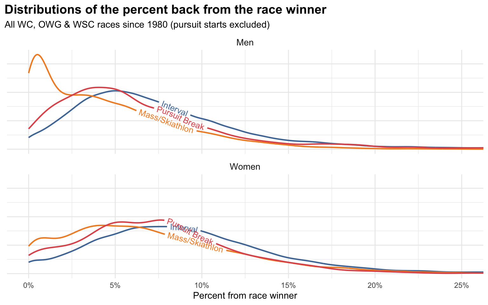
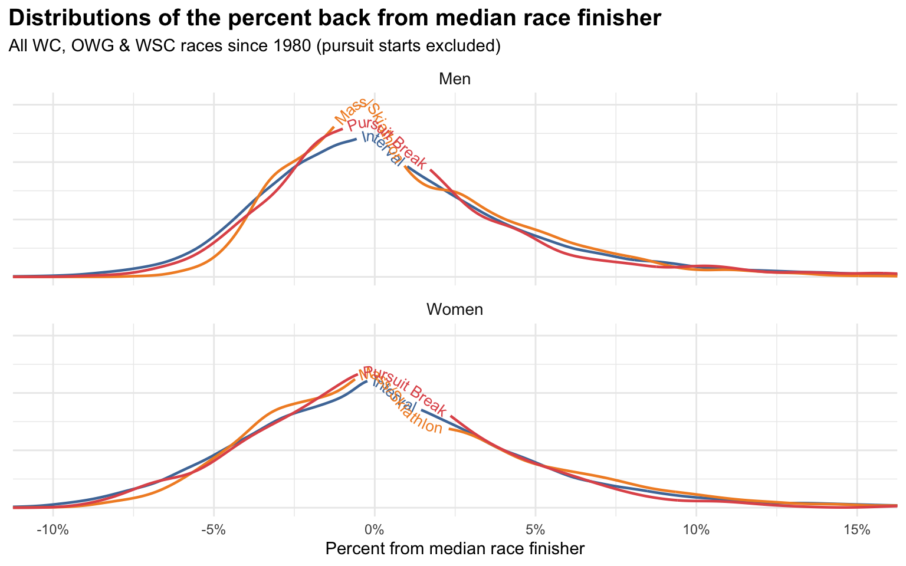
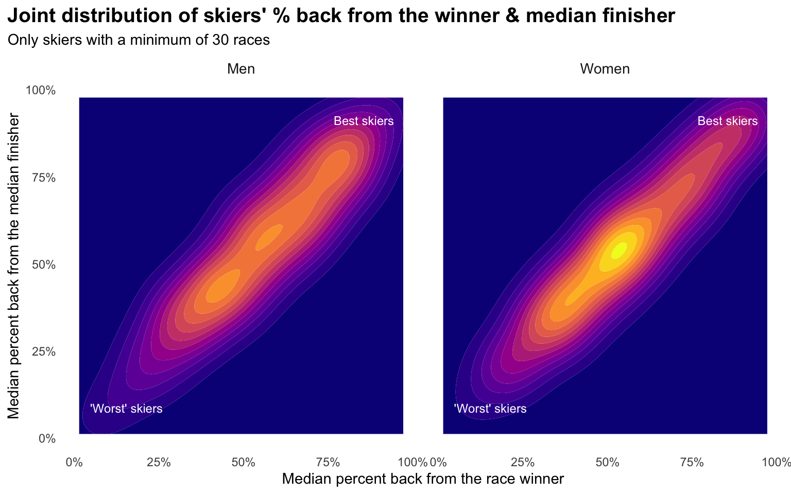
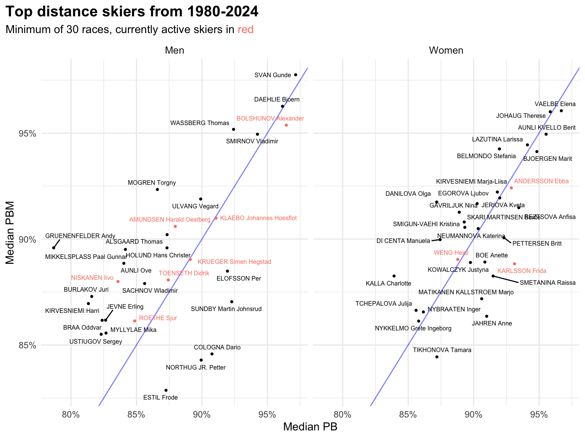

Putting skier’s performances in historical context is something I’ve written about a lot, in a variety of forms. Most recently I looked at simple rates of winning & podiums as a way of quantifying some of the best skiers in history.
Another way to slice that, focusing only on distance racing, is to focus more on percent back type measures. The two I like to use are the traditional percent back from the race winner (PB) and the percent “back” from the median race finisher (PBM).
The former is what FIS points are derived from, the latter is an alternative that I like to use from time to time. They are measuring slightly different things, so they each have their own strengths & weaknesses.
Let’s first look at the distribution of PB values for the last 45 years or so.

As usual, I’m excluding pursuit starts entirely, as I don’t really consider them standalone races that can be meaningfully compared to any others. I am including “pursuit break” races, which is an old format primarily from the 90’s which was the combined time of a classic & skate race separated by a day. They were sort of like modern skiathlons but with a day in between the classic & skate portions.
The standard stuff jumps out here:
- Men’s mass starts are much more likely to generate very low PBs, as the races tend to be very slow with a sprint finish
- Women’s mass starts also are more likely to have low PBs, but to much lesser extent
- In general, most men’s PBs are between 0-10%, with the most common around 5% (mass starts excepted)
- In general, most women’s PBs are between 0-15%, with the most common PBs tending to fall closer to 7.5%
Keep in mind that these PB distributions are across all skiers, so it includes the folks finishing last. I’m only plotting the left portion of the distribution, in reality it extends way out to the right.
Next, let’s look at PBM:

Since our reference point is the median race finisher, these values don’t have a hard stop at 0%. The top half of a race will have negative PBMs and the bottom half will have positive ones. In theory, the race winner could have an arbitrarily low PBM.
That’s one of the advantages of PBM, as it allows for an expression of the margin of victory of the race winner. For skiers like Therese Johaug who when she won would often win by very large margins, PBM will reflect that, whereas it would get lost in the usual PB measure.
On the other hand, with PB, we know that 0% always means you won the race. With PBM you could have a value of -1% or -5% and they might both be races you won. That information just isn’t stored in PBM at all.
The other well known problem with PB (much less so with PBM) is that as we mentioned above it can mean very different things in different race formats. A PB of 1% has a very different meaning for an interval start race versus a mass start in terms of how many people finished ahead of or behind you.
One simple way to address this is to convert all the PB & PBM values to percentiles. So instead of a PB of 1%, we’d say that for a men’s interval start race it equates to a percentile of 0.96, i.e. that result is in the 96th percentile for men’s interval start races. Think of it like the results you might get on a standardized test saying that your test results are in the 96th percentile.
Here’s a simple table summarising some example translations between PB & PBM values (column headers) and their corresponding percentiles (table values):
| Race format | PB | PBM | |||||
|---|---|---|---|---|---|---|---|
| 1% | 5% | 10% | -5% | -2.5% | -1% | ||
| Men | Interval | 96.4% | 65.3% | 24.7% | 94.9% | 78.5% | 62.2% |
| Mass/Skiathlon | 75.5% | 37.7% | 10.6% | 98.9% | 83.4% | 66.0% | |
| Pursuit Break | 93.8% | 53.4% | 18.1% | 96.9% | 82.2% | 63.8% | |
| Women | Interval | 96.6% | 77.9% | 37.7% | 90.5% | 74.2% | 60.8% |
| Mass/Skiathlon | 90.6% | 61.0% | 24.9% | 93.7% | 76.2% | 61.8% | |
| Pursuit Break | 93.6% | 68.2% | 24.3% | 92.3% | 75.8% | 62.8% | |
If you do that for all the PB & PBM values you now have everything on a common scale that means closer to the same thing across all race formats.
If you go even further and summarise each skier by their median PB & PBM percentiles you can plot the distribution of all skiers on these two measures:

The best skiers are in the upper right, with very high percentiles on both measures. The “worst” skiers (but still likely faster than all of us) are in the lower left with very low percentiles on both measures.
The two measures are highly correlated, as we’d expect, but the degree that these distributions extend outward from a perfect diagonal line indicates there is some variability between to two.
Now let’s focus in on the skiers that comprise the upper right of both distributions here by plotting the raw data for skiers that would fall in the upper right:

I’ve included Alexander Bolshunov in the “active skier” group, since presumably he will continue racing if certain world events magically resolve themselves. Also, I will let you supply your own commentary on people shown here that may or may not have been chemically enhanced.
To help translate this plot, let’s focus just on Gunde Svan. What this is saying is that Svan’s median PB & PBM across all his races was roughly in the 97th percentile across all skiers. His “typical” race was a better result than 97% of all other skier’s results ever.
A few things I’d note about this collection of the “best” distance skiers:
- There are considerably more active men in this group than active women
- Marit Björgen does not fare nearly as well here as I’d expected
- There’s a distinct group of men (Svan, Dæhlie, Wassberg, Bolshunov & Smirnov) that are clearly separated from the rest
- Some skiers do better on one measure than the other; for example, Petter Northug does better on PB than PBM, which is probably a reflection of the fact that he was particularly known for winning mass start sprint finishes, so he has lots of wins in that measure, but the victory margins are small